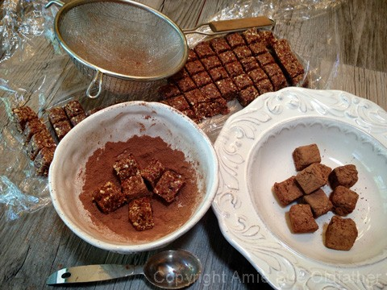
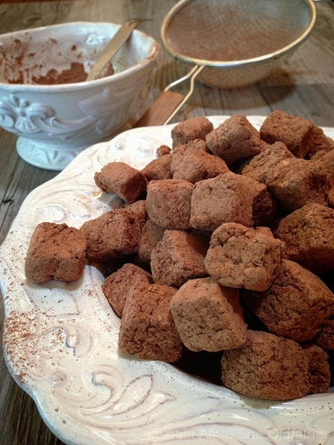

Hazelnut Cranberry Oat Nuggets

~ raw, vegan, gluten-free ~
Did you know….
- The hazelnut became Oregon’s official State Nut in 1989.
- Hazelnuts are also known as “filberts.” Some speculate the name originated from “full beard,” which refers to the husk (or “beard”) that entirely covers the nut in some varieties. Others believe the name was derived from St. Philibert, as August 22 (a date that corresponds to the ripening of the earliest filberts in England) is dedicated to him.
- About 650 Oregon farm families grow hazelnuts on 28,400 acres.
- The total value Oregon growers received for their hazelnut crop has averaged $30 million during the last five years. This translates into a total economic impact of more than $75 million in the state.
- Hazelnut trees can produce until over 80 years of age.
- The hazelnut is unique in that it blooms and pollinates in the middle of winter. The Wind carries the pollen from yellow catkins to a tiny red flower, where it stays dormant until June when the nut begins to form.
- The nuts mature during the summer months, turning from green to shades of hazel nestled in a protective husk, and are harvested in late September or October after they have fallen to the ground.
- In 1858, the first cultured hazelnut tree was planted in Oregon by retired Hudson’s Bay Company employee, Sam Strictland in Scottsburg.
- In 1905, George Dorris of Springfield started the first commercial orchard with more than 200 Barcelona trees. Barcelona is the most prominent variety grown in Oregon today. The Dorris Ranch is now a living history filbert farm with thousands of visitors annually.
This was a quick creation that I threw together to take down to the job site one morning. Because I knew everyone would be hustling and bustling, I wanted to cut them into small bite-sized nuggets, and they were a hit. I placed the bowl on the edge of the front counter and watched the nuggets disappear as people walked by while popping one into their mouth. One thing that I really enjoy about this treat is that it doesn’t require dehydrating. Enjoy my friends!
Ingredients:
- 1 cup hazelnuts, soaked & dehydrated
- 1 cup rolled, gluten-free oats, soaked & dehydrated
- 1/2 cup shredded coconut
- 1 tsp ground Ceylon cinnamon
- 1/4 tsp Himalayan pink salt
- 1 cup Medjool dates, pitted
- 1 cup dried cranberries
- 1 Tbsp vanilla
- 2 Tbsp raw cacao powder, for dusting
Preparation:
- In a food processor grind the hazelnuts, oats, coconut, cinnamon and salt until no large pieces remain. Place in a bowl.
- In the same food processor bowl combine the dates, cranberries, and vanilla. Process until the mixture is mostly smooth.
- Add the dry ingredients into the food processor and process until thoroughly combined. The batter will stick together in a large ball.
- Line a loaf pan or cookie sheet with plastic wrap and press the mixture evenly into the pan. Place in the fridge or freezer to chill.
- Remove and cut into small squares. Coat with the cacao powder and enjoy!
- These should last a week on the counter or longer in the fridge or freezer.
Keep in mind… the more the nuts are processed, the shorter the shelf life they will have. It is best to process (roast, chop, slice, grind) just before use. However, if you’d like to have hazelnuts handy for your wild mid-afternoon culinary creations, freeze them in an airtight container away from foods with strong odors. They will keep for over a year in the freezer, and you can remove the amount you need, bring them to room temperature and use immediately.


© AmieSue.com